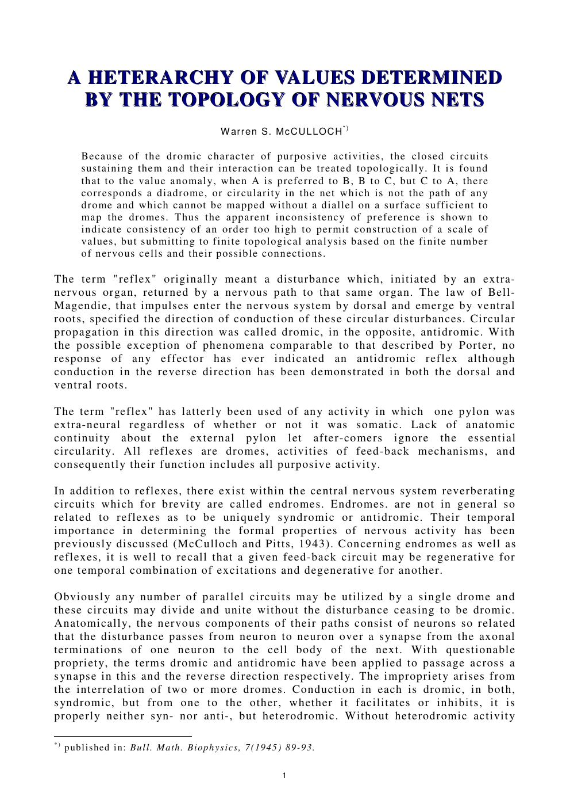
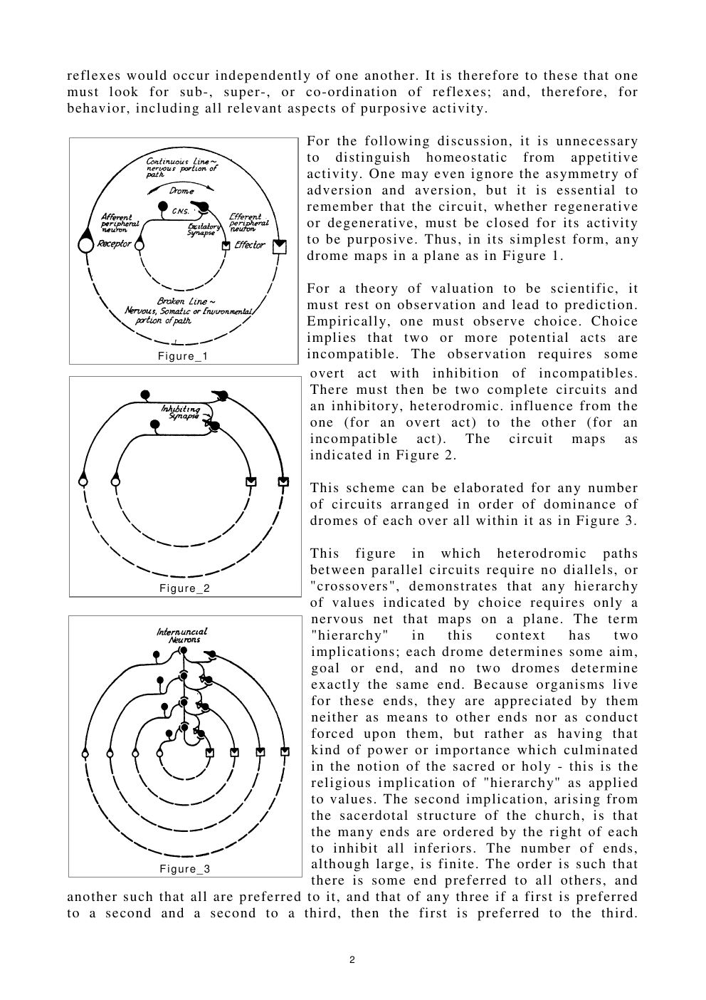
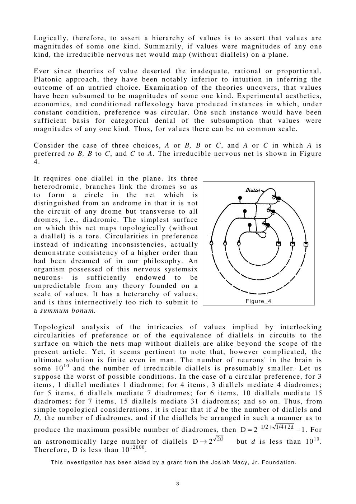
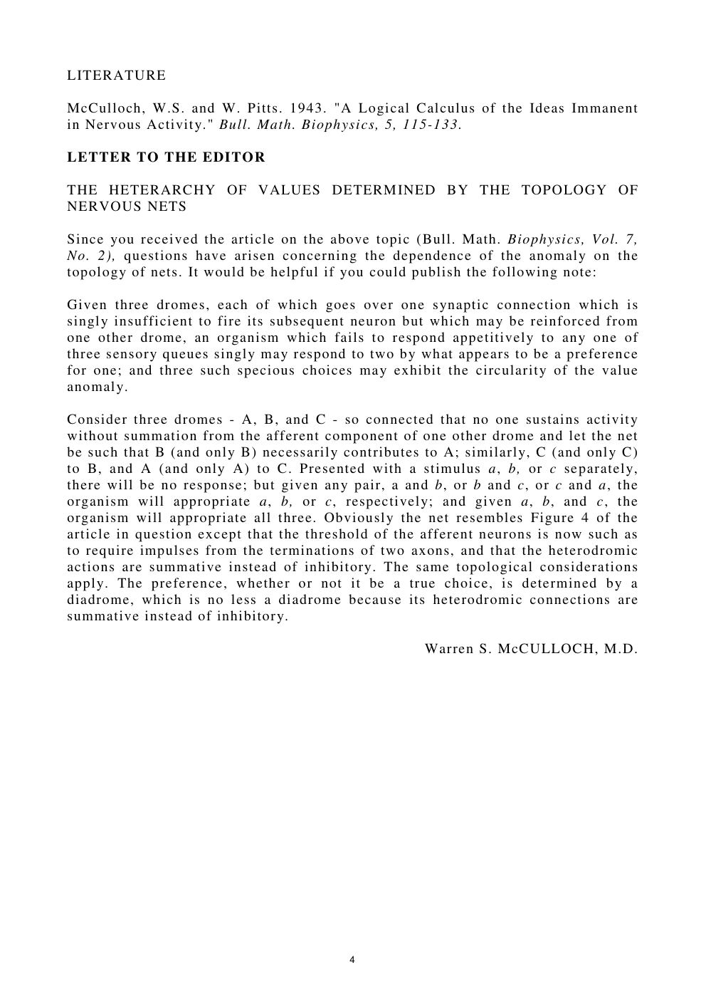

Bulletin of Mathematical Biophysics · Vol. 7 · 1945
A Heterarchy of Values Determined by the Topology of Nervous Nets
Prefer A to B, B to C, and C to A. The pattern looks like inconsistency. McCulloch shows that it is the signature of a nervous net too richly connected to be flattened onto a single scale of value — and that a six-neuron system is already enough.
Read the plateThe thesis
Circular preference is not irrationality. It is a topology.
A reflex is a drome: a disturbance that leaves an organ, travels through the nervous system, and returns to stop or reverse itself. A closed chain of neurons that sustains such activity is an endrome. When two dromes interact, the influence between them is neither dromic nor antidromic but heterodromic.
Build three dromes, let each inhibit the next, and the choice between them becomes a closed loop. The loop is not the path of any drome; it is transverse to all of them — a diadrome. To draw it without a crossing, you need a torus. To predict it with a single scale of value, you need a miracle.
The claim: “values are magnitudes of some one kind” is equivalent to the claim that the irreducible nervous net maps on a plane. Circular preference falsifies the second, and therefore the first.
Laboratory · the value anomaly
Three choices. Two topologies.
Flip the pairwise preferences. A transitive order can be drawn on a plane and ranked on one scale. A cycle cannot: it needs a handle, a diallel, a diadrome. Switch to the neural view to see the same fact as a wiring problem.
Choice graph / nervous net
Click a pair to reverse its preference. The readouts tell you whether a common measure exists and what surface the net requires.
scale of valueNo common measure
minimal surfaceTorus
transverse loop1 diadrome
The argument
From three preferences to a theorem about brains.
The paper's images are topological, not quantitative. A hierarchy of values is a set of dromes ordered by inhibition: each dominates all inferiors, and the relation is transitive. That net is planar. A cycle of dominance is not. It requires one diallel — one crossing — and the simplest surface on which it embeds without a crossing is a torus.
The consequence is not scepticism about value. It is a sharper realism: values can be real, comparable locally, and still lack a common measure globally. The failure of a single scale is a fact about the shape of the system, not a defect in the chooser.
The minimal anomaly. Three dromes, each inhibiting the next. No single ranking can satisfy all three preferences at once.
The finite bound. With diallels, the maximum number of diadromes grows like . Even with , the complexity is finite — a heterarchy, not an infinity.
The translation. The psychological question “can values be ranked?” becomes the topological question “can the net be drawn without a crossing?”
The voice
Six neurons, no summum bonum.
“Circularities in preference instead of indicating inconsistencies, actually demonstrate consistency of a higher order than had been dreamed of in our philosophy.”
“An organism possessed of this nervous system — six neurons — is sufficiently endowed to be unpredictable from any theory founded on a scale of values.”
“It has a heterarchy of values, and is thus internectively too rich to submit to a summum bonum.”
“Thus, for values there can be no common scale.”
“The apparent inconsistency of preference is shown to indicate consistency of an order too high to permit construction of a scale of values.”
The paper itself
Pages from 1945
click to enlarge




Why it matters
Value is shaped, not scalar.
This is the paper that gives later cybernetics and AI its most useful word for a certain kind of order: heterarchy. It says that a system can be consistent without being rankable; that local comparisons can be real while a global utility function is impossible; that preference can be cyclic and still lawful.
Modern recommendation systems, game theory, and multi-objective optimisation rediscover the same obstruction whenever they try to collapse a cycle of trade-offs into one score. McCulloch's answer is not to force the cycle flat. It is to ask what surface the system actually lives on.
Read next: how a net recognises a universal — the same group-theoretic move, applied to perception.